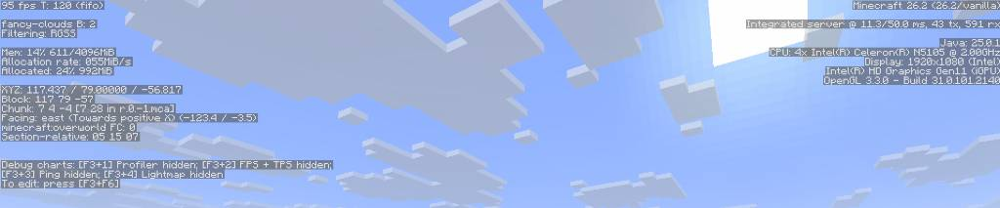
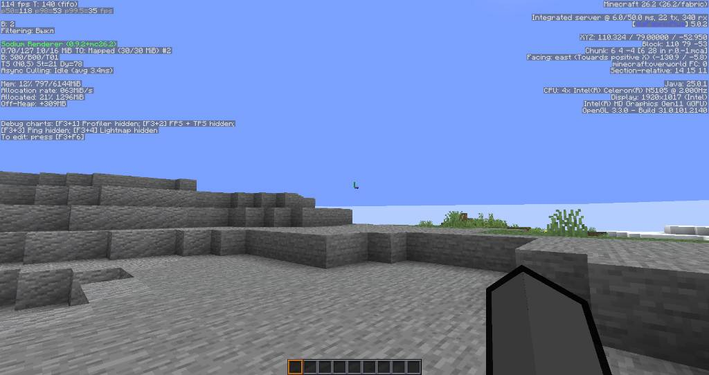

Дефолтный Minecraft

Чистая ванильная версия 1.26.2 (Прорисовка: 8, Симуляция: 5): На скриншоте выше видны тесты на процессоре Intel Celeron N5105. В пустом мире, где практически нет сущностей, чистый клиент выдаёт вроде бы неплохие 95 FPS.
Однако без оптимизации игра страдает от постоянных микрофризов и жестких просадок (статтеров) при генерации мира, а встроенная графика нагружается вхолостую. Плавности в дефолтном клиенте нет даже при минимальной нагрузке.
Сборка FrogMine

После установки FrogMine (Прорисовка: 8, Симуляция: 5): А это результат работы нашей оптимизации на движке Fabric с Sodium Renderer! Счётчик кадров вырос до стабильных 114 FPS.
За счёт глубоких твиков задержка встроенного сервера упала с 43 мс до 22 мс. Это полностью ликвидировало все микрофризы и статтеры. Мир прогружается плавно, а управление стало максимально отзывчивым.
Что внутри сборки?
Ядро оптимизации (FPS и Движок)
- Sodium + Sodium Extra — Мощный рендер нового поколения, заменяющий тяжелый OptiFine.
- C2ME + Bobby + Lithium — Ускорение генерации чанков, многопоточность и оптимизация физики мира.
- ModernFix + FerriteCore + BadOptimizations — Исправление утечек оперативной памяти и ускорение запуска игры.
- EntityCulling + SightCull + Cull Fewer Leaves — Отключение рендера невидимых мобов, стен и лишней листвы для разгрузки видеокарты.
- VulkanPostFX + Async Fabric — Улучшение постобработки и асинхронные вычисления.
Интерфейс, Функционал и Визуал
- ViaFabricPlus — Возможность заходить на любые версии серверов.
- Xaero's Minimap — Удобная и легкая миникарта.
- Zoomify — Плавное и настраиваемое приближение камеры.
- Inventory Profiles Next — Умная сортировка и управление инвентарем.
- Roughly Enough Items (REI) — Удобный просмотр всех рецептов крафта.
- AmbientSounds + NotEnoughAnimations + Visuality — Объемные живые звуки, новые анимации игрока и красивые частицы.
Ресурс-паки (Графика)
В сборку уже встроена и настроена связка текстур на базе Faithful 32x:
- Faithful 32x + Better Leaves — Четкие ванильные текстуры и объемная листва.
- Dramatic Skys Demo — Реалистичное и красивое небо.
- Eating Animations x32 + Theone's Eating Pack — Плавные анимации поедания еды.
- MandalasGUI + Dark Smooth GUI (Blue) — Стильный темный интерфейс в приятных синих тонах.
- ClearerWater + Low Fire + Ore Borders — Прозрачная вода, низкий огонь и удобные рамки у руд для шахт.
Связь
Если у вас появились вопросы по установке сборки или предложения по добавлению новых модов, пишите TG frogmineB: